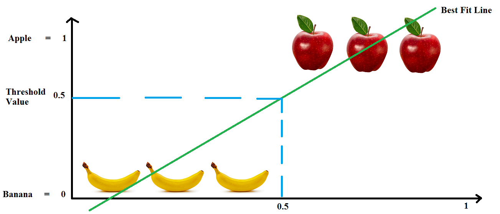
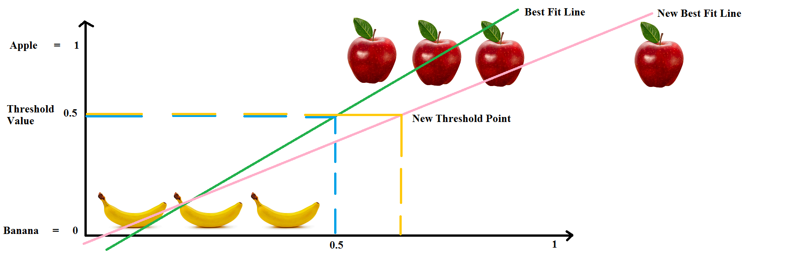
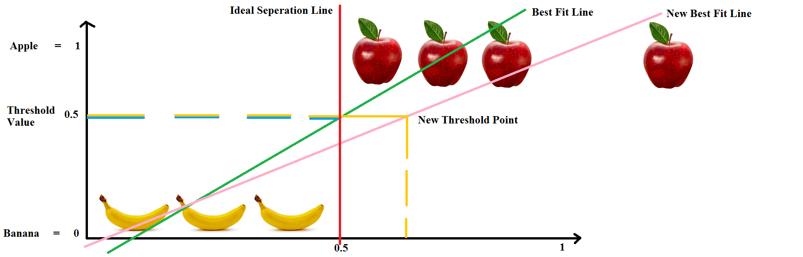
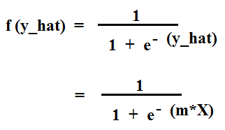
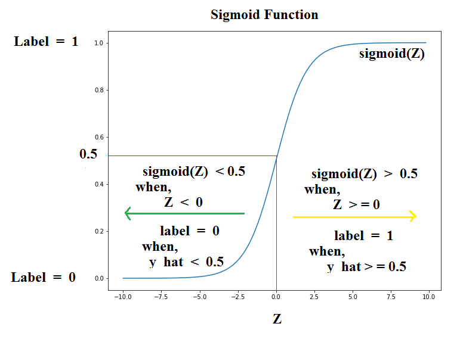
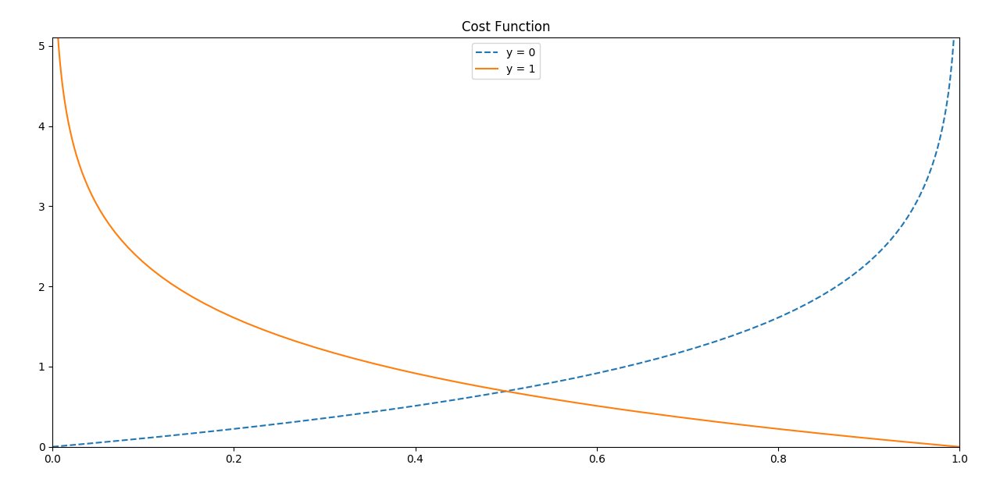

Hello Everyone !!
Thanks for continuing with this post.
In the last post, we discussed about our first Machine Learning algorithm i.e. Linear Regression, the theory and the mathematics behind it.
In this post, we will study our second Machine Learning algorithm i.e. Logistic Regression.
In our first algorithm, we got a taste of Regression algorithm. We saw that if we are given a continuous data then we can apply a regression algorithm like Linear Reression and form a Best Fit Line to predict the new values.
In this post we will study about the second type of algorithm i.e. Classification algorithm and the easiest one of them is the Logistic Regression.
As you might have guessed, the data in this case is not continuous but discrete and our aim is to predict the labels for the new data i.e. whether data belongs to class "0" or "1", "yes" or "no", tumor is "Malingnant" or "Benign" and so on.
So, let's get started.
Logistic Regression:
The first question that comes to the mind is that what is Logistic Regression?? Let's start from a definition. Wikipedia defines Logistic Regression as follows:
In statistics, logistic regression, or logit regression, or logit model[1] is a regression model where the dependent variable (DV) is categorical. This article covers the case of a binary dependent variable—that is, where it can take only two values, "0" and "1", which represent outcomes such as pass/fail, win/lose, alive/dead or healthy/sick. Cases where the dependent variable has more than two outcome categories may be analysed in multinomial logistic regression, or, if the multiple categories are ordered, in ordinal logistic regression.
Logistic Regression is the oldest, simplest and the most widely used classification model in the field of machine learning.
So, what is the aim of Logistic Regression?? Well it's aim is to learn the relation between the input labelled data and then find/predict the labels for the new input data. If we try to look this in a 3-D plane, it can be seen as below:

In this image, we can see that we have two classes. One with the value/label y = 1 in blue on the top and the other with the value/label y = 0 in red on the bottom.
Each color here depicts a class to which they belong. Now say we bring in a new point which is of blue color. So, we train our classifier on the training data and let the classifier to assign the new blue point to any of the two classes.
Where do you think that the Classifier should put that point ?? Well, we can clearly see that ofcourse put the point where y = 1 i.e. on the top. This is what we wan our classifier to do after being trained.
Why train a classifier ?? Well remember when you were young and you had two baskets of fruits. In one you have apples and in the other you have bananas. So, given a new apple where would you put that ?? In which basket ?? Ofcourse the first one. As simple as that. This is what we want to do here.
Can I use Linear Regression for Classification ??
Before going any further, let's do some brainstorming. Could we use Linear Regression for the same case ?? Well we could find a best fit line that could somehow form a hypothesis that might help us do this same thing. Let me explain this scenario with the help of an example.
Let us consider a fruit classification problem. We have some apples and some bananas. Given a training dataset, we need to find that a new fruit given is an apple or a banana. So, how would we solve this problem using Linear Regression ??
Let us plot a Best Fit Line using Linear Regression as shown in image below. Also, we can take a threshold value something like a limiter on the values or fruit type. Here, if we are below "0.5" then it is a banana else an apple.

Well that was easy. Let's now take an other apple and put it somewhere in there. Done !! Uh Oh !! We got a problem. The "Best Fit Line" needs to shift. Again the threshold points on the axis changes and we have new range to classify apples and bananas.

Again, we take another apple, and say we place it a bit far, again the same problem. The "Best Fit Line" moves with every new element. This anomaly is not good for Classification as it can cause errors as well in the Classification.
This is one of the reasons why we cannot use Linear Regression for this problem. So, what would be an ideal line that can seperate the two classes. Well, maybe it can be a straight line like the red one in the image below.

One thing that we have noted in the previous tutorials and the discussion above is that in Classification the outcomes are usually within the range of "0" and "1" i.e.
0 <= y_hat <= 1
which is not possible with Linear Regression as its values can be > 1 and even < 0. So, it is not favourable to Use Linear Regression for this purpose.
So, all said and done, let's get back to our original topic i.e. Logistic Regression.
Logistic Regression Mathematics
Let us consider our hypothesis to be of the form:
y_hat = m*X
where, m is the coefficient and X is the input data.
We said above that for Classification problem, the value of hypothesis is within the range "0" and "1". So to bring the above hypothesis output within this range, we need to use a function that does this very well. One such function is the Sigmoid Function.
A Sigmoid Function is a function that takes in input data and fits the values in the range of "0" and "1" which is what we want. A sigmoid function is given by the equation:
where, x = y_hat
Hence, the equation becomes:

So, the final hypothesis for Logistic Regression becomes:
y_hat = sigmoid(m*X)
Let's now visualize the sigmoid function. A sigmoid function is of the form as shown below:
Well that looks pretty good. So, what do we notice from the Sigmoid Plot ??
Firstly, the hypothesis that we have defined above is y_hat = sigmoid(m*X). This can also be seen as a probability function such as P(y_hat=1|X;m) i.e. Probability of y_hat = 1 given the values of X and m.
Secondly, we see that to fit this hypothesis in the range, we require sigmoid function. Now when is the value of y_hat going to satisfy the above probability function ?? Well, let's see.
We can see from the above sigmoid plot that,
sigmoid(Z) >= 0.5, when, Z >= 0
sigmoid(Z) < 0.5, when, Z < 0

Correspondingly,
Label = 1, when, y_hat >= 0.5
Label = 0, when, y_hat < 0.5
So, now that we know that for what values we can get a label "1" or a "0", let's see how to get the value for y_hat i.e. let's define our Cost Function.
Cost Function
In Linear Regression we saw that the cost function was given by the following equation:
J = (1/2n) * summation((y_hat - y)^2)
Since, we want to create a decision boundary. Can we use this same Cost Function where the only difference is that in Logistic Regression, the hypothesis y_hat is given as sigmoid(m*X) rather than y_hat = m*X which is how we get a value in the range "0" and "1".
So, the Cost Function for Logistic Regression becomes:
J = (1/2n) * summation((y_hat-y)^2)
where y_hat = sigmoid(m*X)
Let us define the term inside summation as "C(y_hat,y)". So,
C(y_hat,y) = (1/2) * (y_hat-y)^2
Now the thing is that we earlier used Gradient Descent to find the values of "m" and "b" as the cost function was convex. But it is not the case here because the hypothesis has changed. Due to this the function has multiple local minimas and is no longer a Convex Function and Gradient Descent is not great at dealing with it.
So, what to do ?? What if we define the cost function in some other way. For Logistic Regression, we define the value of "C(y_hat,y)" as follows:
C(y_hat,y) = -log(y_hat), if y = 1
C(y_hat,y) = -log(1 - y_hat), if y = 0
Let's plot these values.

But why these values. Well, we can see that the plot for the function -log(Z) goes from +infinity to +1. But we want only the values in the range "0" and "1". On the other hand, the second function -log(1-Z), plot goes from "0" to +infinity between "0" and "1".
This cost function looks good but let's clean it up a bit. We can rewrite this Cost Function as follows:
Cost Function [J] = -y * log(y_hat) - (1 - y) * log(1 - y_hat)
J = -y * log(sigmoid(m*X)) - (1 - y) * log(1 - sigmoid(m*X))
So, what happens when we put the value of "y" ?? let's see.
y = 1, J = -log(sigmoid(m*X))
y = 0, J = -log(1 - sigmoid(m*X))
So, we have our cost function. What next ?? Yes, you guessed it right. Time for Gradient Descent to minimize the cost function.
Gradient Descent for Logistic Regression
Well, just as we did for Linear Regression, we use the optmization technique called Gradient Descent to minimize the cost function.
So, let's get the gradient value first. To find the gradient, we take the derivative of the cost function w.r.t "m". So, let's do it.
Taking the derivative dJ/dm gives us the value:
dJ/dm = (1/n) * X * ((m*X+b)-y)
This equation looks familiar. Ohh, it's the same equation as for Linear Regression. The oly difference here is the hypothesis (y_hat).
Next, to update the value of "m", we simultaneously update the value as follows:
m := m - alpha * (dJ/dm)
where, alpha is the Learning Rate.
Now that we have covered the basics of Logistic Regression, I think its now time to write our second Machine Learning Algorithm in Code, i.e. Logistic Regression.
Great work on completing this tutorial, let's move to the next tutorial in series, Introduction to Machine Learning: Logistic Regression Code from Scratch
For more projects and code, follow me on Github
Please feel free to leave any comments, suggestions, corrections if any, below.
comments powered by Disqus